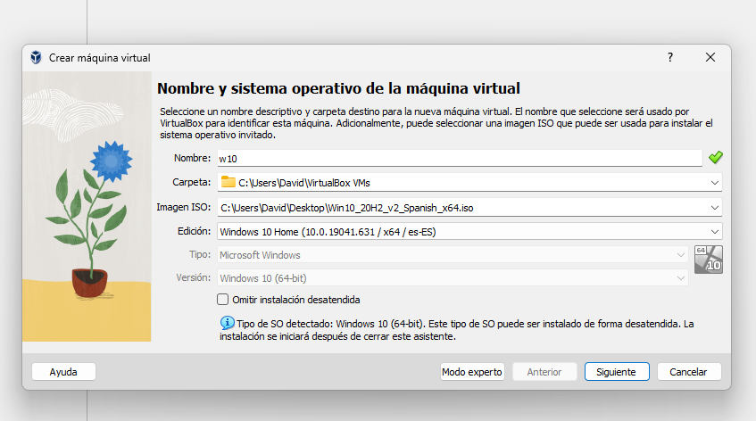
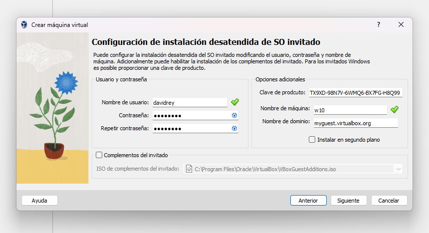
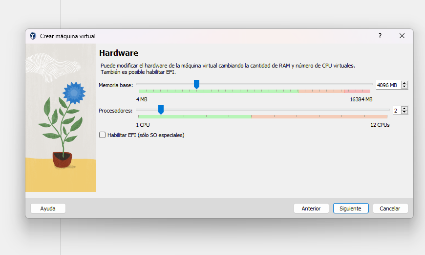
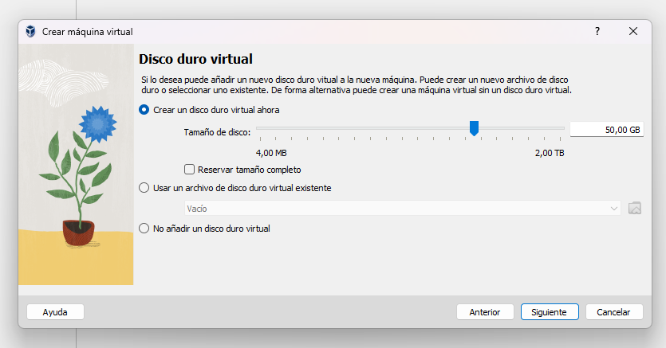
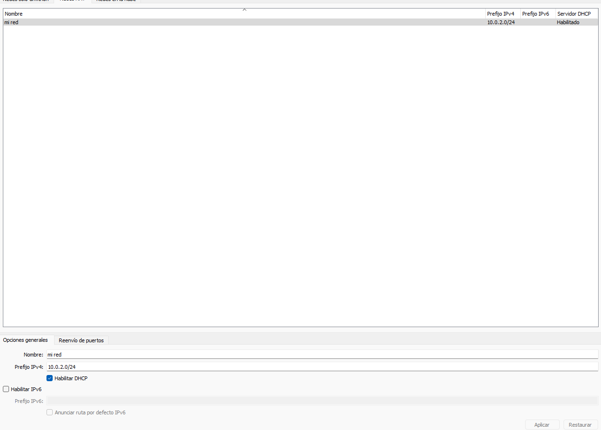
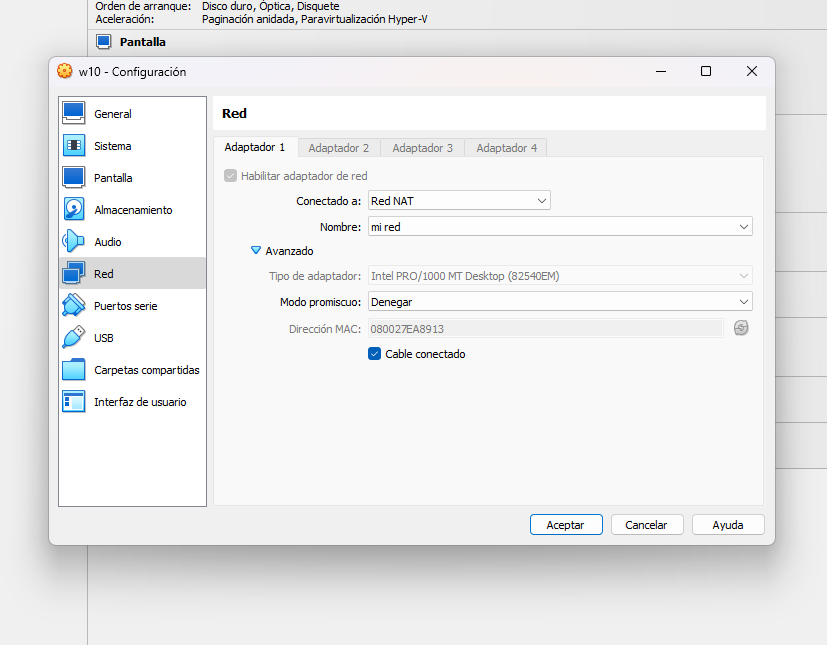

Una vez hecho el anterior paso, procedemos a la configuración de este software.
Vamos a seguir los siguientes pasos de la instalación de un sistema operativo en VirtualBox.
Paso 1: Creamos la máquina virtual. Le damos a "Nueva" y ponemos un nombre y la imagen ISO.
Paso 2: Ahora creamos un usuario y contraseña. También le tenemos que dar una clave del producto que podemos buscar en internet (En Ubuntu no es necesario la clave del producto ya que es software libre).
Paso 3: Le configuramos la RAM y el procesador. Te recomiendo usar la configuración que pongo en la imagen.
Paso 4: Configuramos el disco duro, que recomiendo dejarlo tal y como nos lo pone.
Listo! Ya estaría configurado. Al darle a "Terminar" se nos abriría la máquina virtual automáticamente y se empezaría a configurar sola. Para Ubuntu es el mismo proceso.
Para que ambos equipos se conecten entre sí, debemos hacer lo siguiente:
Paso 1: Le damos a herramientas, luego a las tres rallitas y después a Red.
Paso 2: Ahora le damos a NAT y la creamos. Ponemos un nombre y ya.
Paso 3: Lo configuramos en Windows y Ubuntu, desde la configuración de VirtualBox en el apartado de Red.
Listo! Y ahora, una vez configurados ambos sistemas, vamos a instalar "Samba" y hacer las pruebas de las transferencias de archivos.